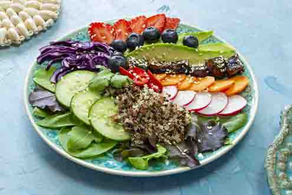

What are the cognitive skills?
Cognitive skills are the brain's core mental abilities used to think, read, learn, remember. They are what your mind uses to process information, interact with the world, and solve problems.

Cognitive skills are the brain's core mental abilities used to think, read, learn, remember. They are what your mind uses to process information, interact with the world, and solve problems.
Physical Activity supports both body and your mind, research has also shown that physical activity improves learning ability, memory, decision making etc.

Getting 7-8 hours of sleep each night can help preserve attention, memory and decision making

Eating food that support your physical health also suppports your brain. Balanced diets with a range of protein, fat, and carbohydrates are important

Reaction speed is how long it takes for a human to process and act upon receiving new information It involves your senses, nervous system, and your muscles working in unison, all happening in a fraction of a second
The average reaction speed of a human is about 250 milliseconds while competitive e-sports professionals generally range around 150-170ms
Auditory signals reach the brain processing power faster than visual cues does, hence why sprinters react to the bang of the gun instead of its flash. However, you process touch the fastest, averaging around 0.15 seconds
Human reaction time generally peak around 24 years of age before declining by around 4 to 10 milliseconds after that
When attempting to anticipate and react to somemthing, your reaction time fluctuates because you occasionally lose focus before regaining it back after